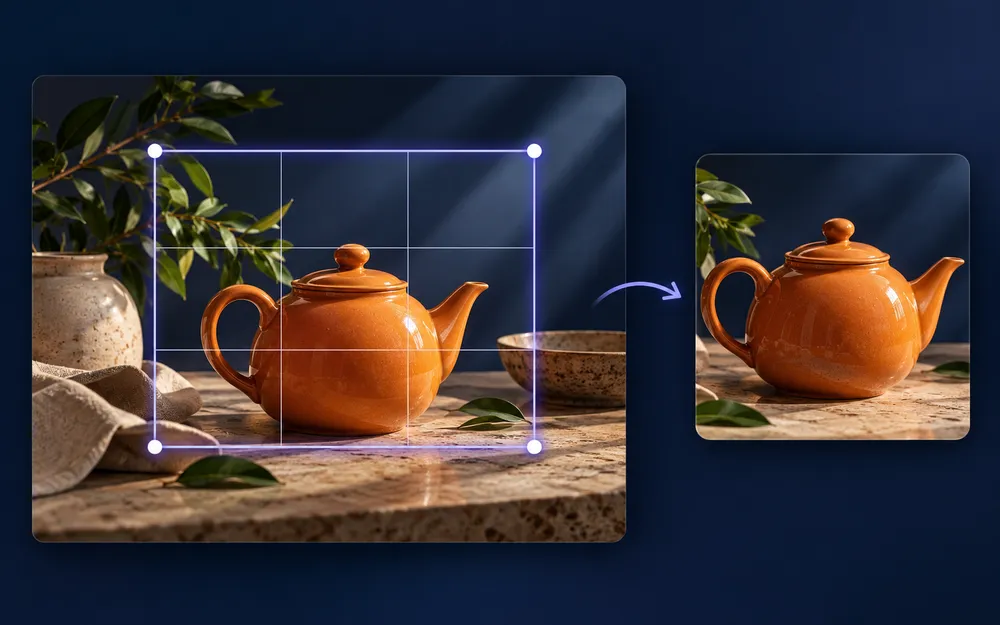

Image Cropper
A stronger frame can make the same photograph tell a clearer story.
Cropping is a choice about attention. Remove a distracting edge, bring a small subject forward, or leave deliberate space for a caption. The useful question is not how much you can remove, but what the viewer should notice first.
How to use Image Cropper ↓How to use Image Cropper
Choose a photo, drag inside the crop to move it, or drag any corner or side handle to resize. Set Width, Height, X and Y in pixels for precise crops. Aspect Ratio locks a preset such as square, widescreen or story. Full Image resets the boundary; Reset Selection restores the initial crop. Crop & Download saves the selected area.
Choose media
Upload a supported file and wait for the preview before changing settings. Keep your original file.
Use the editing controls
Choose a photo, drag inside the crop to move it, or drag any corner or side handle to resize. Set Width, Height, X and Y in pixels for precise crops. Aspect Ratio locks a preset such as square, widescreen or story. Full Image resets the boundary; Reset Selection restores the initial crop. Crop & Download saves the selected area.
Check the preview
Inspect edges, text, faces and output dimensions. On a phone, scroll the bottom tools sideways when more controls are available.
Save a copy
Export and open the downloaded result to confirm its appearance. The source file remains available for a different edit.
Precision when the destination matters
Choose a ratio when you need a consistent shape, then move the frame to protect the subject. Width, height and edge positions use pixels for exact adjustments. Drag a corner or an edge for a quick change; use the numeric fields for a repeatable crop. Cropping removes pixels and does not recreate missing detail.
- Prepare images for profile pictures, social posts and thumbnails.
- Use aspect ratios to create consistent frames.
- Adjust the crop before exporting the new image.
Start with the final destination in mind. A square crop works for many profile images, while landscape and portrait ratios suit different publishing layouts. Leave a little breathing room around faces and text.
Questions, answered
Does cropping reduce image quality?
Cropping removes pixels outside the selected frame. The remaining pixels are not enlarged unless you also resize the image.
Can I choose a custom crop?
Use the crop handles and the available aspect-ratio or dimension controls in the workspace.
Is my image uploaded?
This cropper processes the image in your browser; it is not sent to LOOX by the crop workflow.
Will this replace my original file?
The tools create a separate output. Keep the original until you have checked the exported file; the site does not provide cloud project backups.
Can I publish the result?
Use source media you own or have permission to edit. Check the destination’s requirements and the rights of anyone shown before publishing.